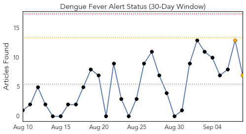
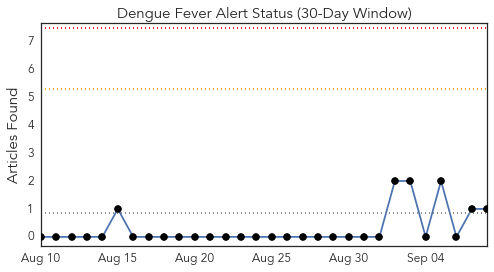
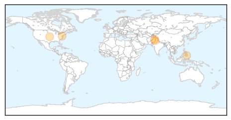
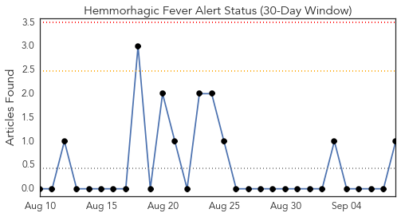
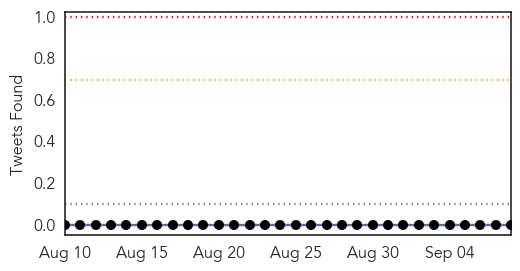
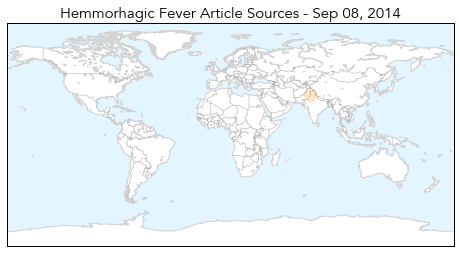
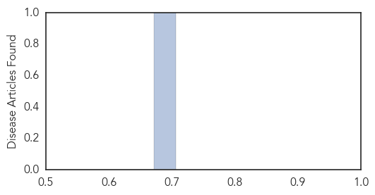

Dengue Fever
30-Day Web Trend
0 alerts, 2 warnings

30-Day Twitter Trend
0 alerts, 0 warnings

Article Locations
Article Confidences

Top Articles:
- 0.951
- Minister confirms 1, 000 dengue positive cases in Odisha
- 0.923
- Japanese firm may market dengue vaccine in 2017
- 0.905
- Experts warn about temporary 'spikes' caused by 'dengue vaccine'
- 0.895
- Dengue cases down 61% so far this year
- 0.732
- Anti-dengue day observed
- 0.687
- Health awareness: SMS service started to control dengue
- 0.588
- Two places sealed under anti-dengue drive
Top Tweets:
- 0.582
- Flavivirus news: Ministry closes Shinjuku Gyoen National Garden amid dengue fever outbreak - Th... http://t.co/FVvq6spHMx pathogenposse
Hemmorhagic Fever
30-Day Web Trend
0 alerts, 0 warnings

30-Day Twitter Trend
0 alerts, 0 warnings

Article Locations
Article Confidences
Top Articles:
Top Tweets:
-
No tweets found for Sep 08, 2014